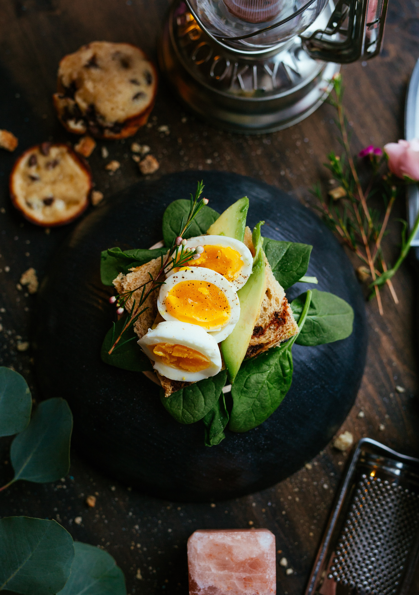
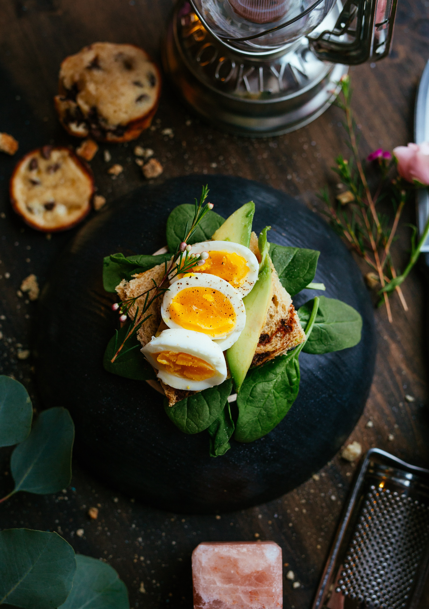

Authentic.Wholesome
The Michigan Good Food Charter defines good food as food that is healthy, green, fair and affordable.Along time ago, people ate foods that were pasture with balanced quantity of nutrient value. Not with chemicals, preservatives.If you say that food, especially savoury food, is tasty, you mean that it has a fairly strong and pleasant flavour which makes it good to eat. Try this tasty dish for supper with a crispy salad. I thought the food was very tasty. Synonyms: delicious, luscious, palatable, delectable More Synonyms of tasty.
 
